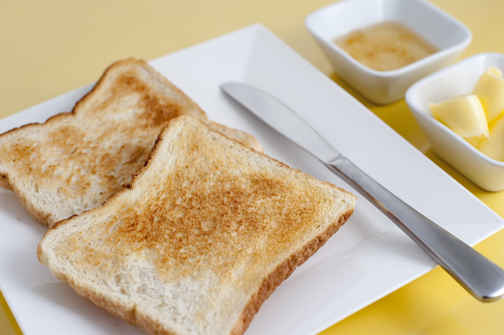

Toast

Description
You never asked for it, so we're giving it to you!
Every man and woman reading this thinks they know how to make toast, but do they really?
Probably.
But because I'm bored as tits, I'm going to write a recipe anyway and you're goint to
read it and then follow it and enjoy some dry white bread.
Ingredients
- White Bread sliced
- An air of desperation
Instructions
- Really? Are we doing this now?
- I guess so.
- Go to the pantry and take out the bread.
- Take two (2) slices of white bread out of the bag.
- Seal the bag of bread.
- Walk to your kitchen counter.
- Realise you don't have a toaster.
- Eat the slices of white bread on the couch, crying about your life.